The importance of the VS driver pivot point is often overlooked. When I am trying to ID a badged machine, it is the first thing I look for. I can also tell by the position of the pivot if a Singer # 83505 shuttle is likely to be compatible as the swing of the arm defines the shape of the shuttle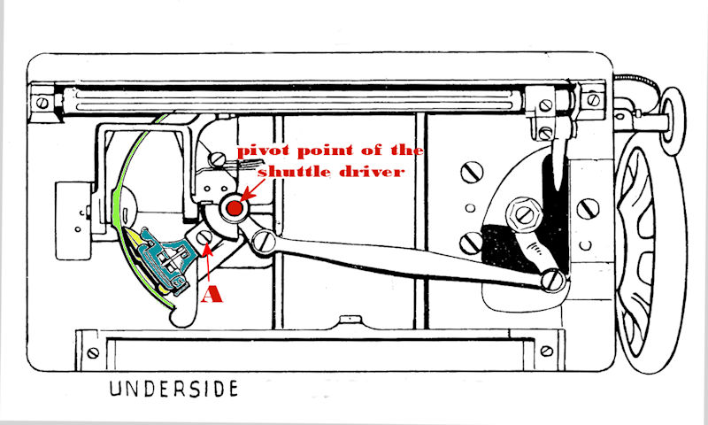 |
|
| 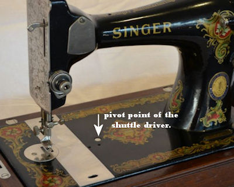 | Because of the Singer Manufacturing Company’s international
market dominance, it did to some extent set the standard for the position
of the pivot point. This is not to be confused with “copying”
any more than the standardisation of micro USB/charger port is copying.
When making a consumer product you need to consider the convenience of the
end user, and conforming to the shuttle, needle, presser foot etc used by
a similar Singer model will prove to be more convenient to your customers. |
|
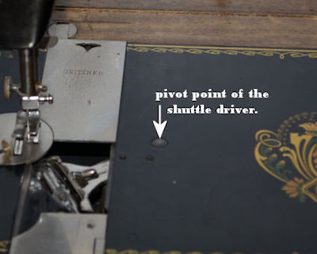
|
Gritzner circa early 1930s. Like most German made VS models, it conforms to the Singer standard |
| 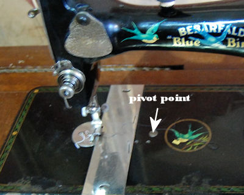 | Pfaff circa 1930 (badged by Bebarfald Sydney as a Blue-Bird) |
| 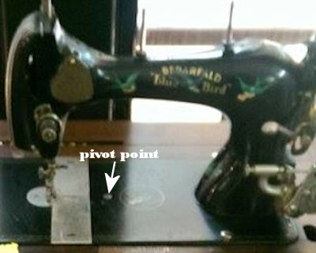 | Pfaff circa 1930 (badged by Bebarfald Sydney as a Blue-Bird) |
| 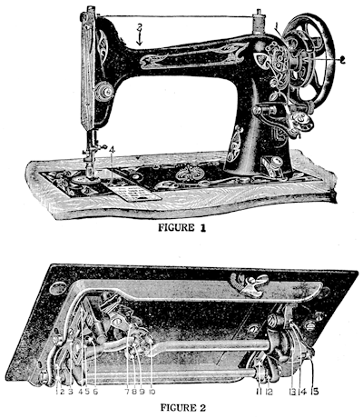 | Even the USA manufactured Free Model E with its unique rotary oscillating coupling at the pivot point, did not deviate from the position. Meaning with a small caveat affecting the shuttle lifter, the Singer # 83505 shuttle can be used. |
| 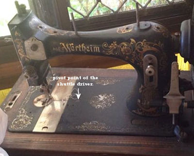 | Wertheim originally specialised in reciprocating transverse shuttle machines. This early 20th century Wertheim Planet was one of the company’s first VS models and also conforms to the Singer standard for the pivot point position. |
| 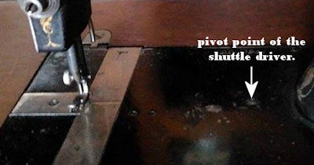 | However, this is the bed of another Wertheim from around the same time. While the upper part of the machine is almost identical to the Wertheim Planet in the previous picture, the pivot point. |
| 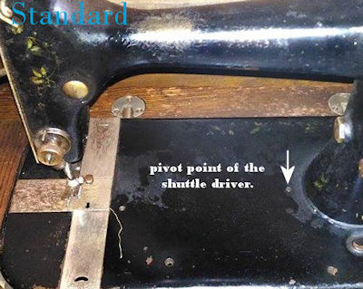 | Compare the mystery Wertheim VS to the bed of this US manufactured machine
by the Standard Sewing Machine Company. |
| 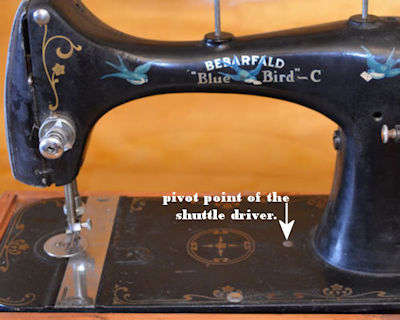 | USA made National Reversew circa 1930s (badged by Bebarfald Sydney as
a Blue-Bird C) |
| 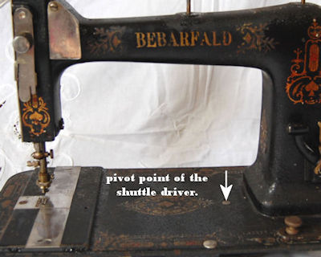 | Canadian made Raymond badged as a Bebarfald circa late 1910s |
| 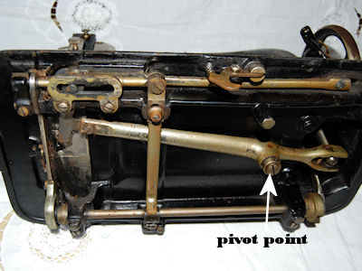 | Canadian made Raymond circa late 1910s |
| 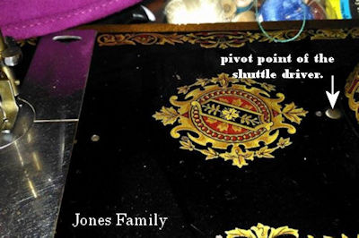 | British made Jones Family (date uncertain) |
| 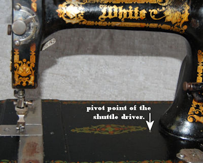 | USA made White circa 1910s |
While the position of the VS pivot point doesn't mean everything, the fact that its position can be seen in most photos which show the top face of the bed, does help in deciding whether it is worth trying a # 83505 shuttle if the original is lost and is important when trying to identify a machine |
|